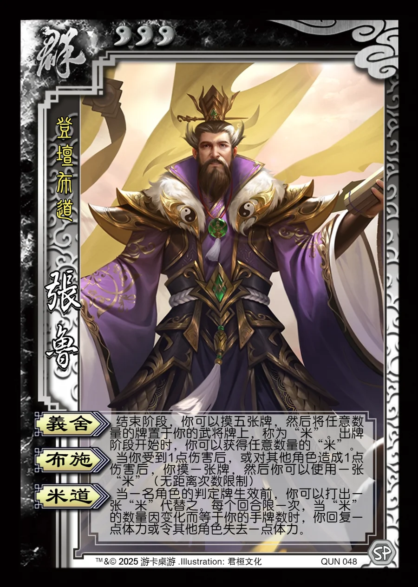

点击卡面查看大图
群
张鲁
♥3登坛布道
义舍
结束阶段，你可以摸五张牌，然后将任意数量的牌置于你的武将牌上，称为“米”。出牌阶段开始时，你可以获得任意数量的“米”。
布施
当你受到1点伤害后，或对其他角色造成1点伤害后，你摸一张牌，然后你可以使用一张“米”（无距离次数限制）
米道
当一名角色的判定牌生效前，你可以打出一张“米”代替之。每个回合限一次，当“米”的数量因变化而等于你的手牌数时，你回复一点体力或令其他角色失去一点体力。